As children, we learn to talk by mimicking the speech habits and stereotypes of pretty much any older figure we see such as our parents, characters in movies and on TV, and our teachers. Martin Hilpert of the University of Neuchâtel says in his English Linguistics video lecture series that in language, there are sex-related and gender-related variability. Sex-related variability deals with the physical processes of behaviors and speech of biological males and females whereas gender-related variability addresses the differentiation between genders as related to socially constructed gender roles and how they affect behavior and speech. He makes the point that four-year-olds regardless of sex have the same sized larynx, a biological variable which dictates a person’s pitch depending on the size of the cavity. Yet, biological boys and girls were studied as having distinct speech because of this mimicry.
My question then is, is there a way of educating young children who are beginning to develop their native language in a way that is sexless? Or preferably genderless? What would that language sound like? Without only regarding vocabulary, would speech patterns, sentence fillers, and tone of voice all be affected just as much? If children were to speak without aligning to any masculine or feminine pattern, would we even notice? Or would they sound too unfamiliar and therefore create another “otherness” with which people could react against? Wouldn’t whole languages have to be rewritten to accommodate this shift, particularly romance languages? Would parents have trouble communicating with their children? Would straight couples still shout that there needs to be a Man and a Woman in the house? Because our thoughts and perceptions are typically limited by the language we speak (read about the Sapir-Whorf Theory), if we broadened our language understanding we could then expand, or even enhance, our methods of communication.
In early sociolinguistics, studies showed that women tend to speak in order to create and sustain relationships while men tend to speak in order to convey information (Hilpert). Concurrently, women speak in forms more standard (which could maximize the people a woman talks to) than those by men who use specified, sometimes esoteric, words and language forms. Because of this, women tend to have larger social networks while men find themselves in “caves”. This is partially consequential to historical gender roles: Women were pressured to be societal and agreeable while men were hunting in bands or going off to war. In those contexts—which are mainly Western but not exclusively so—women could invent special words in this social environment as signifiers of the intimate connections they share. Men could invent special words to legitimize loyalty, or check the status of an ally/enemy. The “heteronorm” (which I’ll use to refer to heterosexual cisgender men and women) aren’t exclusively using specific vocabulary though because any community of practice does this. By the way, a community of practice is a social network that “engages in a joint activity” (eg. a team, a choir, a group of scientists) wherein collective behaviors and associations develop, such as language and jargon (Hilpert).
While the queer community of practice is united in its queerness, it is also divided by its many encompassed cultures. As an ever-growing amalgamation of norm-defying people, LGBTQ+ has it’s groups (the full initialism actually being LGBTTQQIP2SAA, or Lesbian, Gay, Bisexual, Transgender, Transexual, Queer, Questioning, Intersex, Pansexual, Two-Spirit, Asexual, Ally; D’Souza), but it also has many smaller cliques and subgroups each with their own unique vocabulary depending on generation, race, and sexual and gender orientation. Imagine how two older gender-nonbinary fems would talk to each other compared to two 20-something cisgender gay men. Most-likely, they’ll be entirely different. If the older couple might talk in a reserved or otherwise intimate manner over topics of personal interests and shared experiences, the second might talk with animated and elongated expression over topics concerning other people. Regardless of the differences in which these groups talk within the group and to others, the fact that we can consider ourselves a united community at all is saying something far more. Part of joining this community, and its many smaller ones, is acquiring a way of speaking from those already in it, and that means using these “esoteric” words/phrases. Queer communities are known for their sassy, and often-times humorous, one-offs. For example, white gays shout, “ Yas Gawd, yas Mama, I’m living!” at hearing the news of their friends’ sexual encounters while a trans woman of color dressed in extremely flattering clothes says she’s “serving looks”. Yes, I do understand that these examples are extremely generalizing because not all white gays align (in mannerism and social behavior) with other white gays and not all trans women of color align with other trans women of color. On the other hand, language is still a unifier as it brings together those who do share an identity.
Even now, with Rupaul’s Drag Race moving over to VH1 (thanks to the mainly LGBTQ+ audience who have helped popularize it over the years on its parent channel, Logo), even more gays—and those that surround them—will be “reading” and “throwing shade.” Unfortunately, propagating queer culture in mass media is a tricky subject because as it is technically unifying speakers from varied communities the words begin to be spoken by those who don’t appreciate, or at the least are aloof of, the communities these words and phrases are born in; it has a slight appropriating touch. While the queer collective is mainly perpetuated in media historically with the image of whites (usually gay or lesbian) in the middle to upper class (think of Modern Family, Queer as Folk (both versions), Transparent, Will & Grace) one is completely mal-informed if they believe this to be a fair representation of a group that is also middle to lower class gender-queer people of color who aren’t much a part of Western culture and possess a myriad of gender expressions—and lack thereof. On the one hand people can criticize the recent bloom in cinema and TV that focuses on people of color as romanticizing their systematic repression
(Roxane Gay calls out 12 Years a Slave
in her published collection of essays Bad Feminist, Beasts of No Nation, and Roots are other examples) and poverty (always in the presence of White Savior, eg. Moonlight, Precious, Freedom Writers, The Blind Side) instead of focusing on their success and the nuances of the many cultures they make up. Their contributions to queer culture have gone unnoticed the most, however, especially in the realm of moving image. Television has actually been more opportune in this regard.
Moving on, Paul Baker of Lancaster University says in his essay “Gay and Lesbian Language” that “Euro-American categories of sexuality are often not applicable in other cultures” as “some research challenges the concept of gender or sex-binaries, and examines language use surrounding [them]”. He then cites the hijras of India and the bàklas of the Philippines. I wonder then if as queer theory grows into the 21st century and eventually gains footing on a mainstream level the imperialist pop culture of America includes it? As an already much bigger problem regardless of queer inclusion, American producers must realize by now that most of the world isn’t like America even as we push our shows, our movies, our musicians, our literature, and—by way of all of this—our language down the throats of literally every other country on this planet. If we’re going to continue doing this (instead of backing off as we should), then we must reflect the multinational cultures and communities that America is comprised of. Our language is a perpetuator, a catalyzing agent of the topics we choose to speak of, and if we could edit (read: better) our language surrounding those topics we could theoretically change the ways we perceive ourselves, other people, and the relationships between the two which could potentially affect, via American pop culture, the rest of the civilized world.
Baker, Paul. “Gay and Lesbian Language: Historical Perspectives.” In The International Encyclopedia of Human Sexuality, edited by Patricia Whelehan and Anne Bolin, 1–3. Hoboken, New Jersey: John Wiley & Sons, 2015.
D’Souza, Joy. “What Is The Expanded LGBT Acronym? And What Does It Stand For?” Huffington Post Canada, 27 June 2016.
Hilpert, Martin. “Language, Gender, and Sexual Orientation”. Filmed [January 2014]. YouTube video, 35:13. Posted [11 January 2014].
 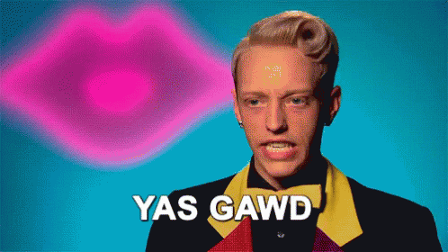
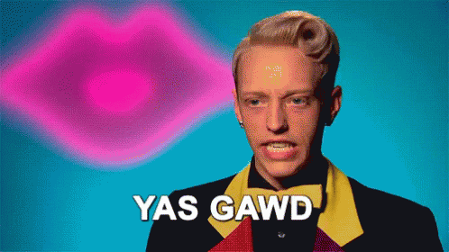
 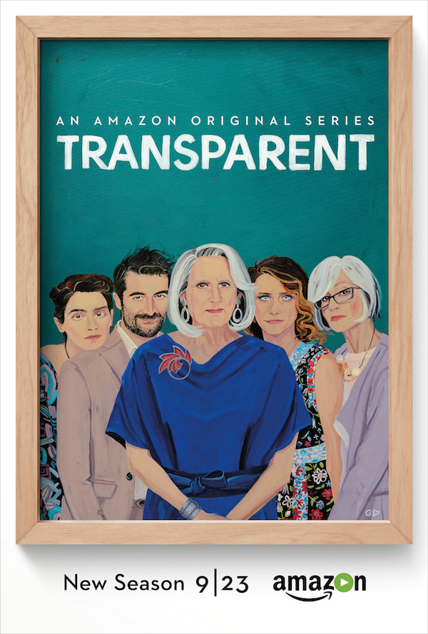
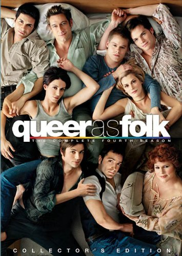
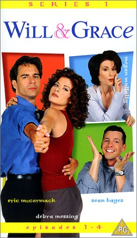
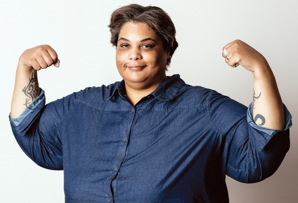
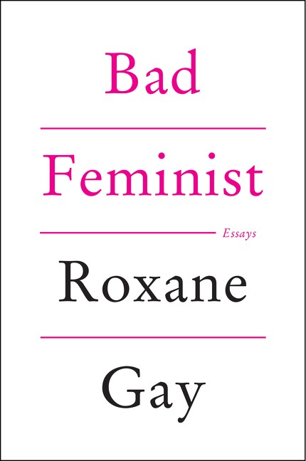
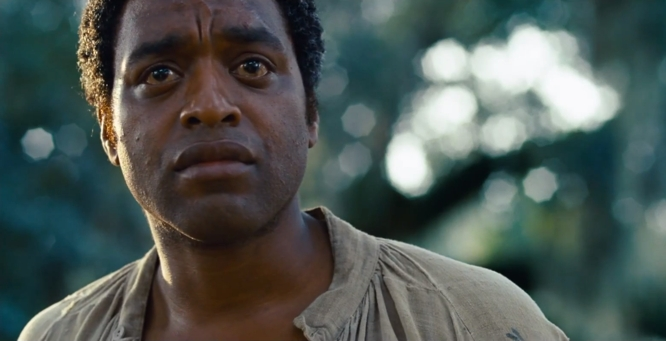
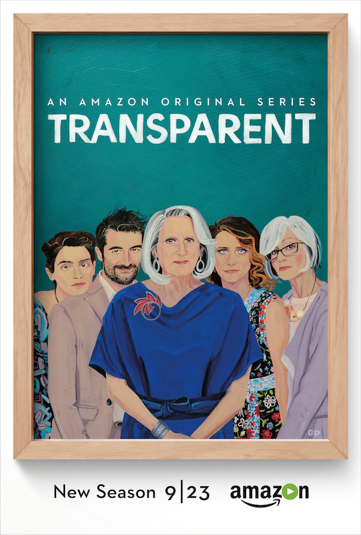
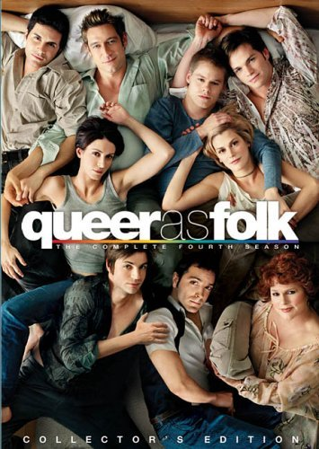
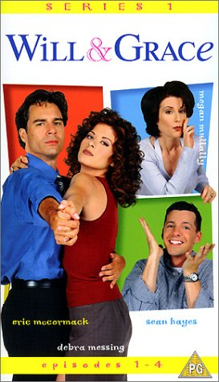
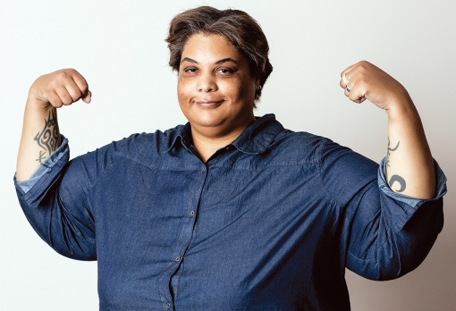
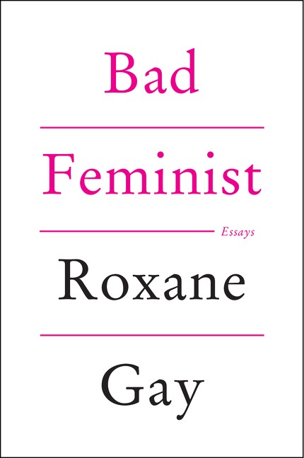
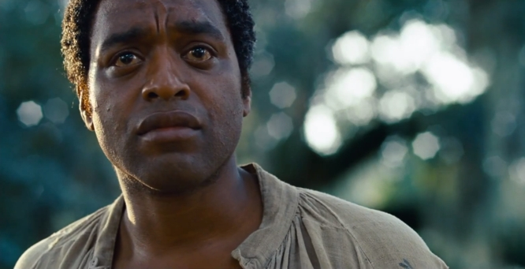
 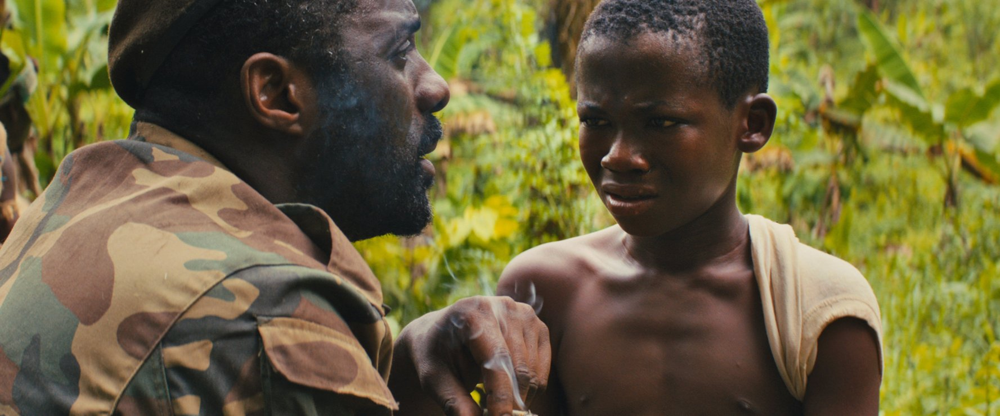
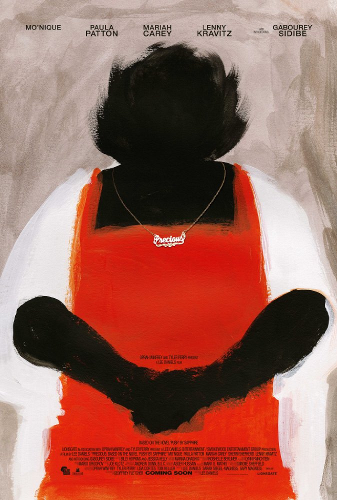
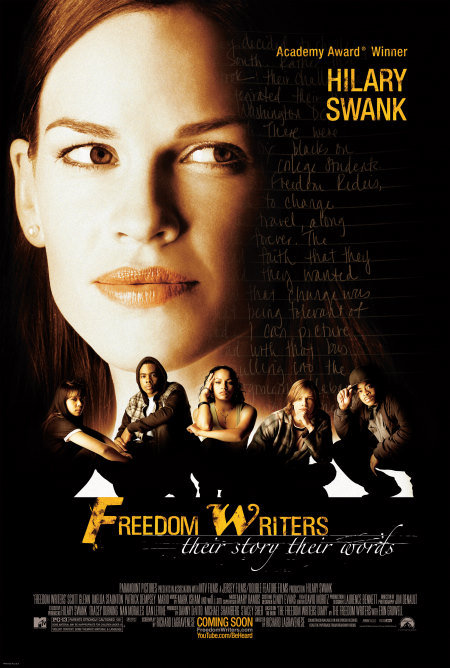
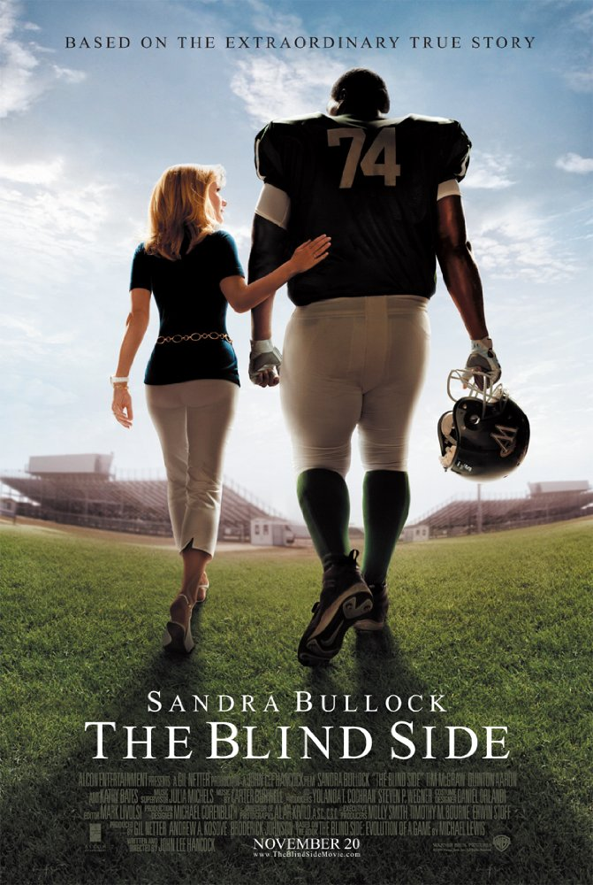
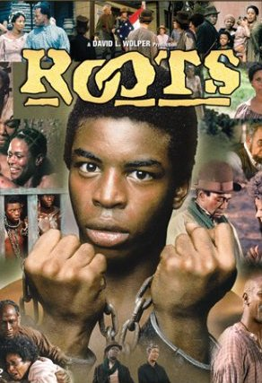
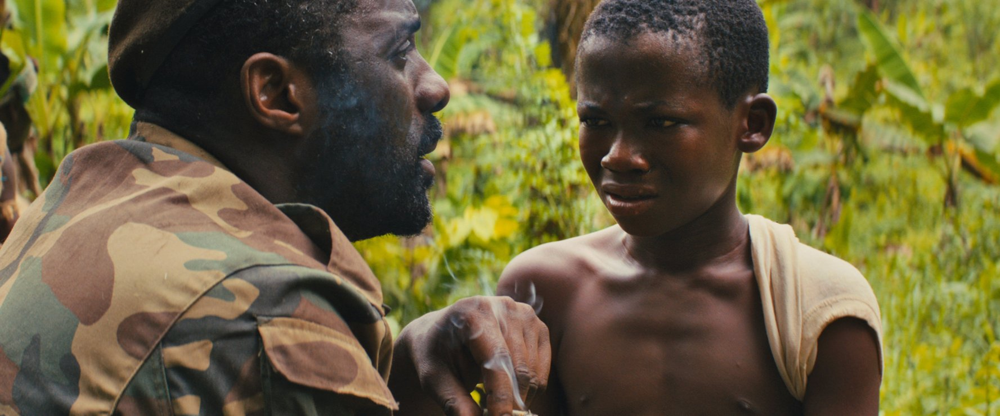
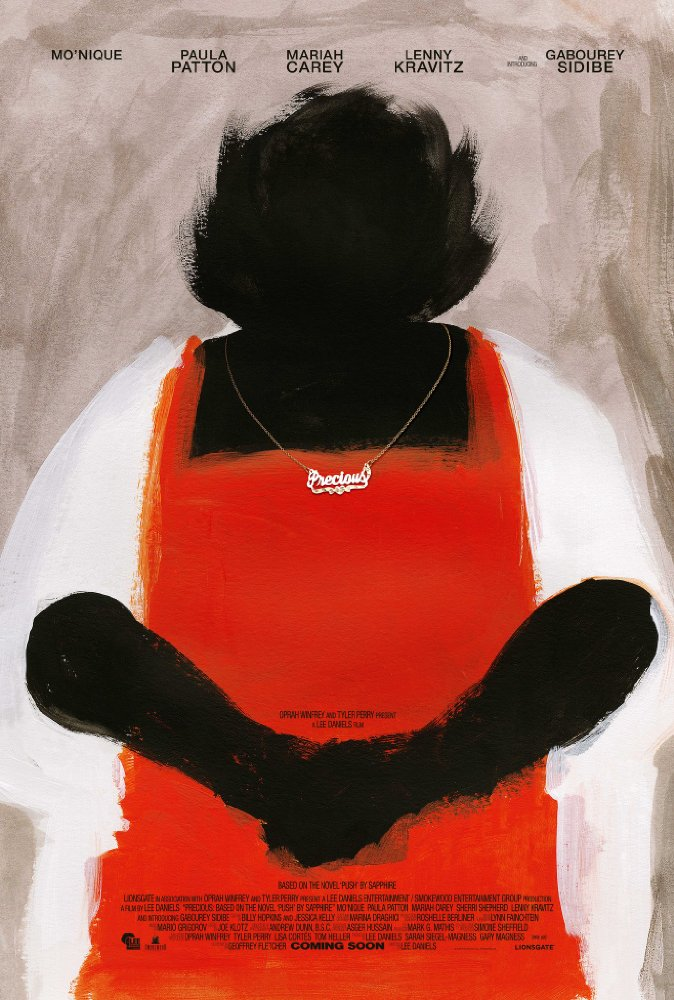
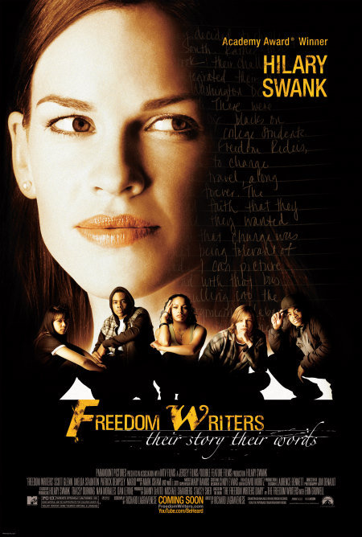
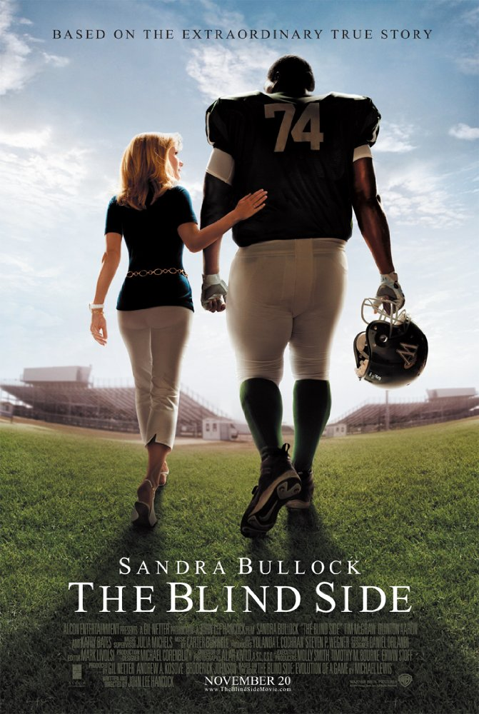
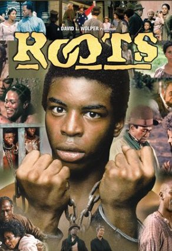
 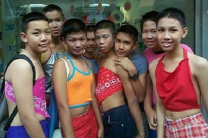
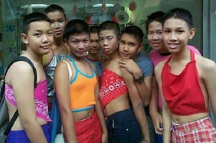